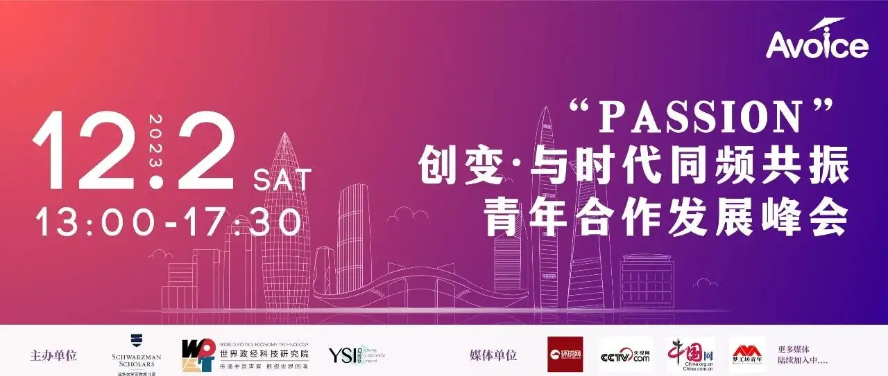
以下文章来源于世界政经科技论坛 ，作者世政经科技WPET
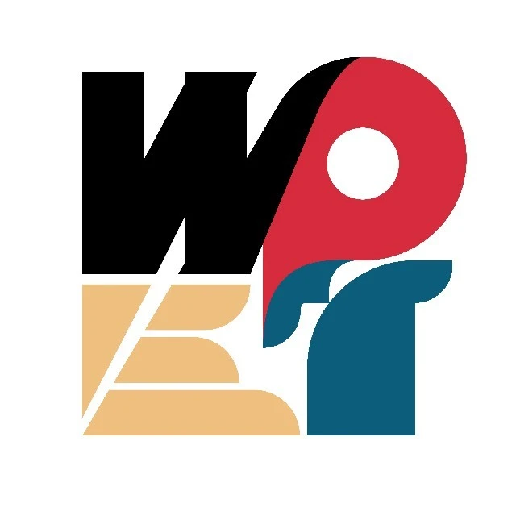
世界政经科技研究院是以大国政治、经济与技术前沿为研究对象，旨在引领时代前沿、回应时代之问的国际化社会智库。研究院聚集数百位优秀学者和行业专家，加快推进建设中国“世界人才中心”和“创新高地”，培养理解中国、建设中国、引领中国的青年才俊。


当您打开这篇推送
距离北京时间2023年12月2日，还有7天
全球政治、经济和安全格局正在经历前所未有的变革。全球化与地区化的紧张关系、技术进步带来的生产方式变革、气候变化等全球性问题的出现，使得国际关系更加复杂和多变。在这样的背景下，青年应该如何通过国际合作、政策创新和科技进步，应对这些挑战，实现可持续发展？
2023 年 12 月 2 日，由清华大学苏世民书院、世界政经科技研究院以及 YSI China 联合主办的“PASSION 创变·与时代同频共振”青年合作发展峰会，即将在清华大学苏世民书院达理礼堂举办。
我们邀请了行业内顶尖的企业家、专家、投资人以及海内外优秀青年代表参与其中，共同探讨青年如何在“全球变局时代”、“人工智能时代”、“数据时代”、“碳中和时代”发挥创新力量，推动全球合作与发展。我们将共同见证青年力量的汇聚，感受时代脉搏的跳动！
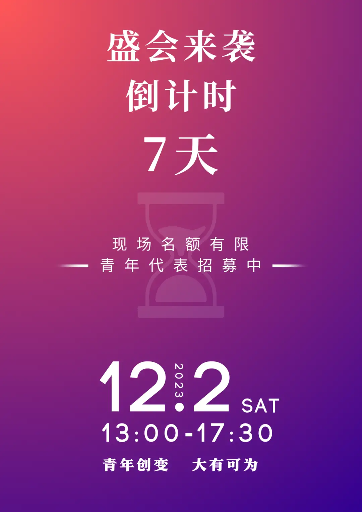
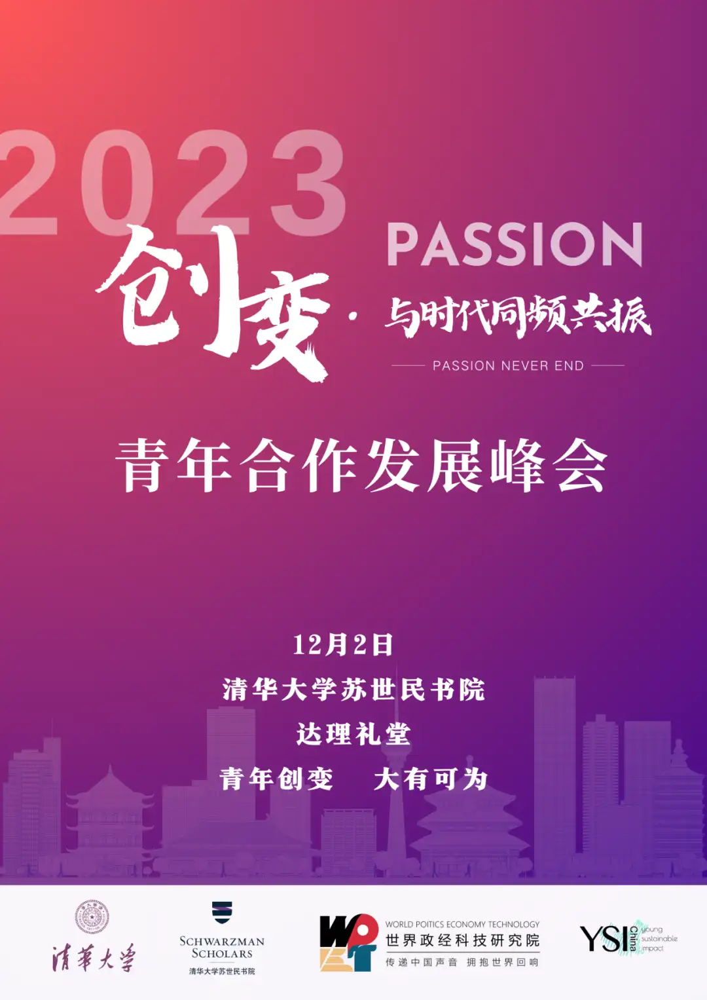
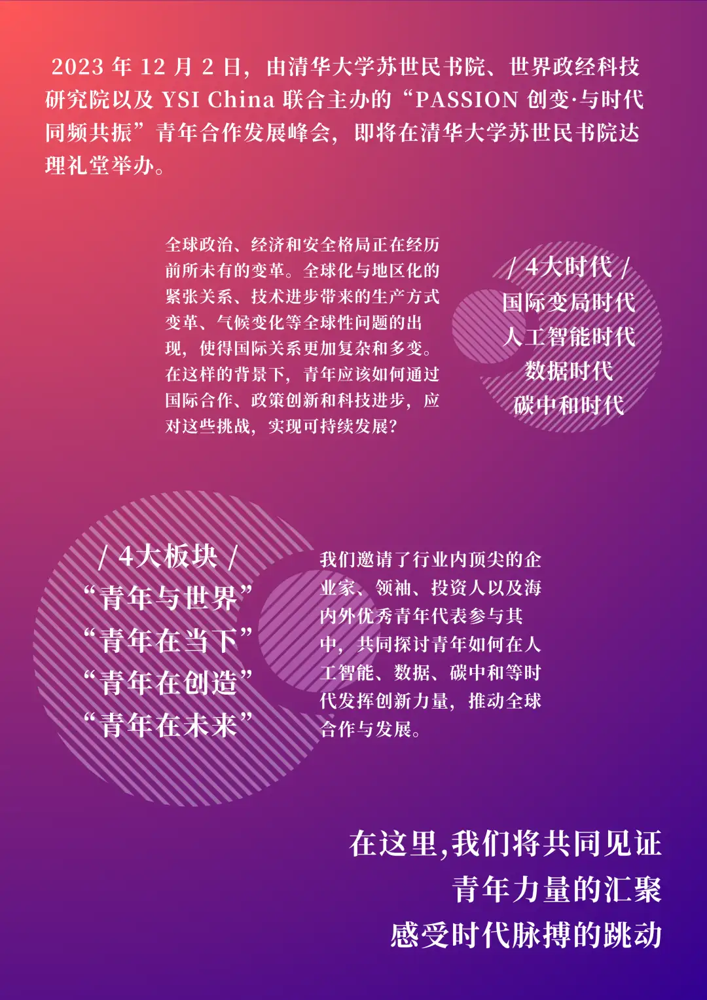
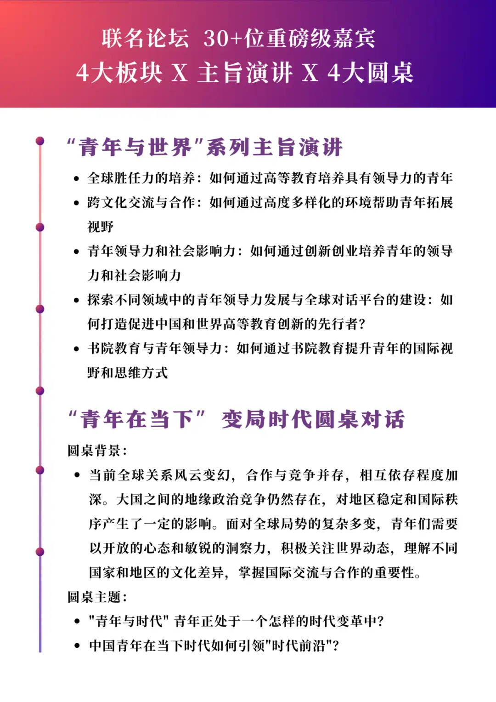
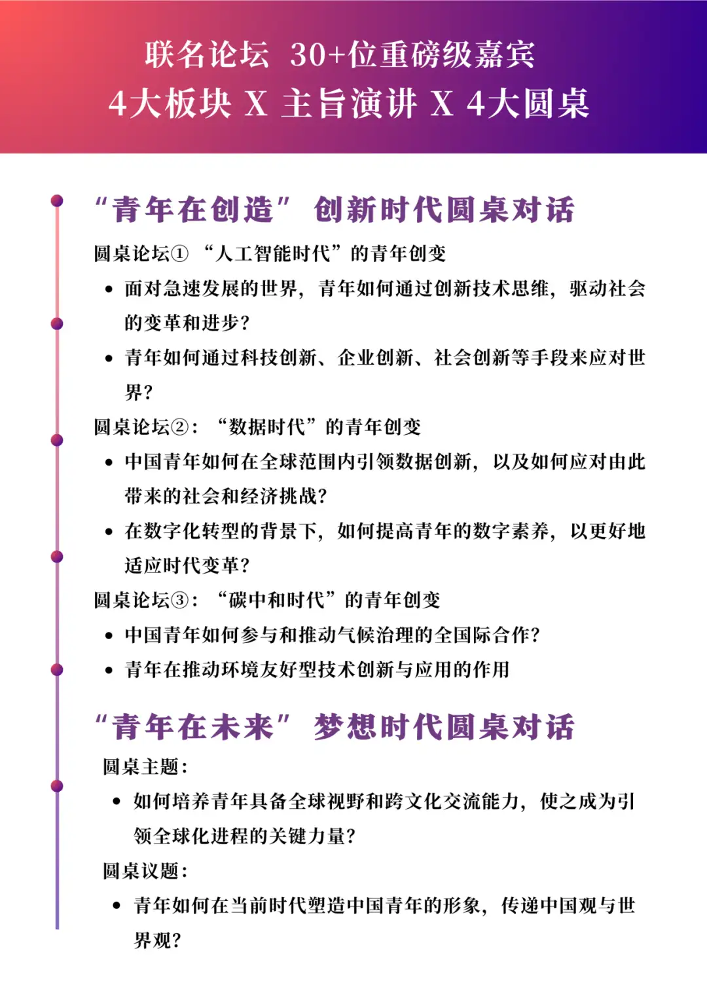
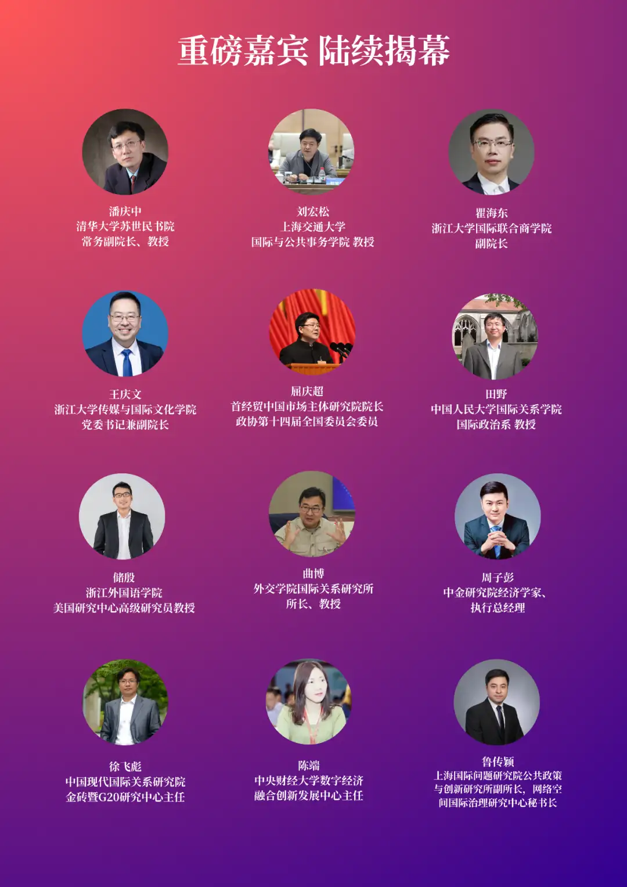
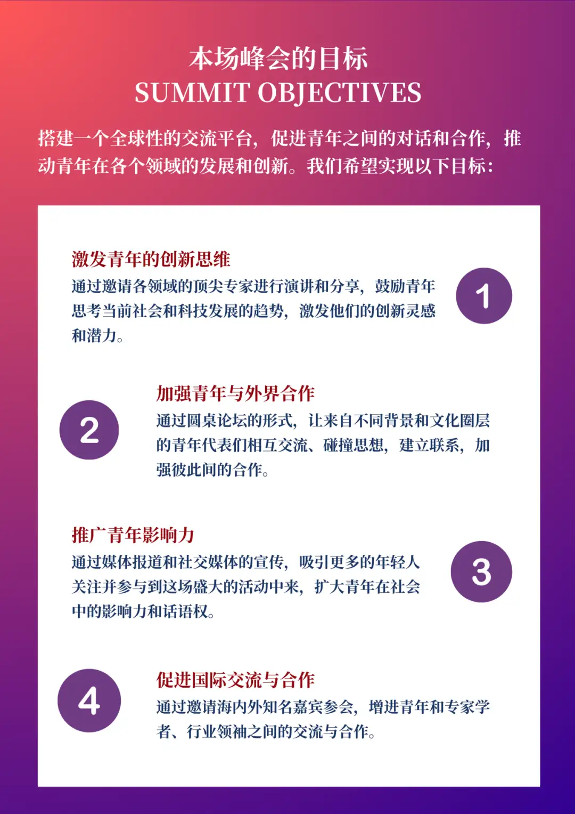
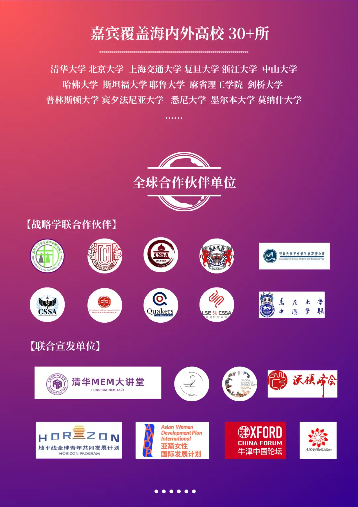
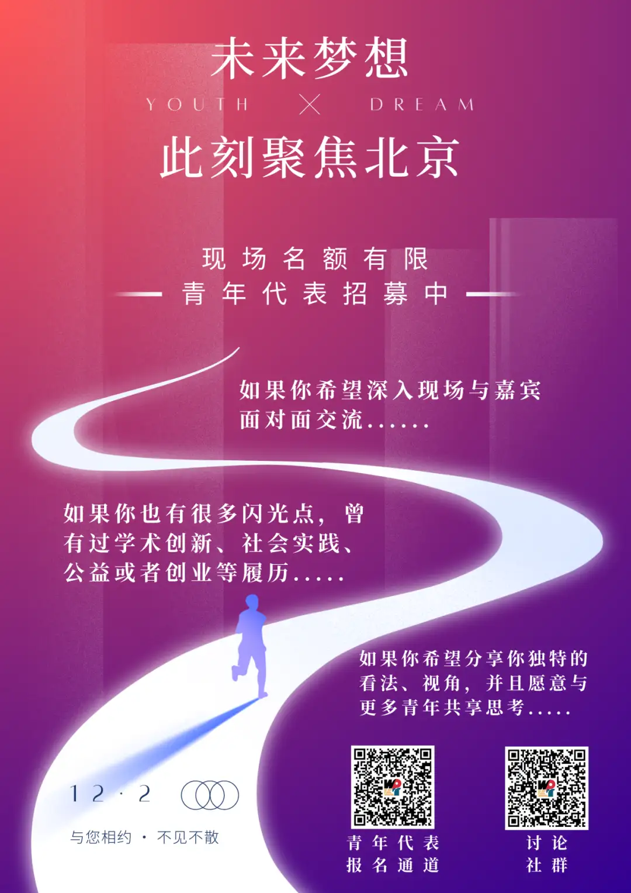
如您希望线下参与本场活动，可扫描海报二维码或文末“阅读原文”进行报名！
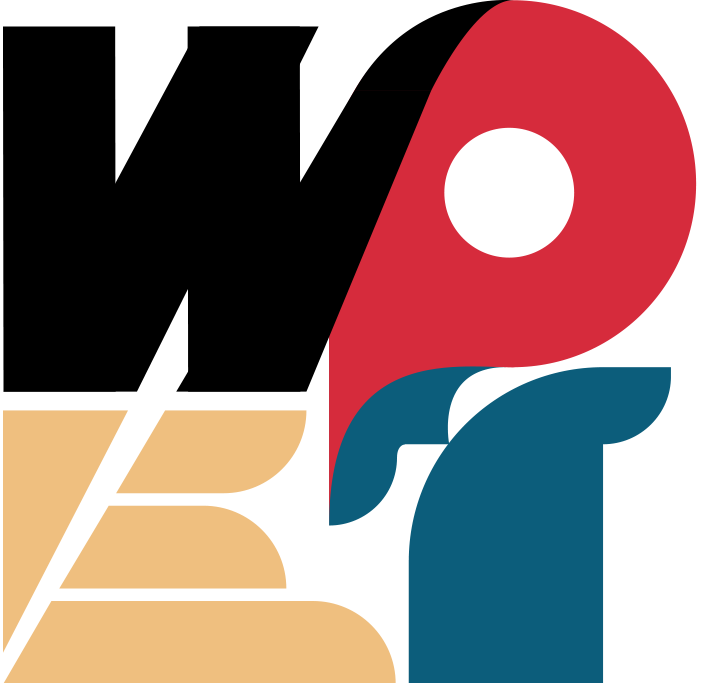
2023 WPET
公众号｜世界政经科技论坛
小红书｜世界政经科技论坛
网站｜wpet.org.cn
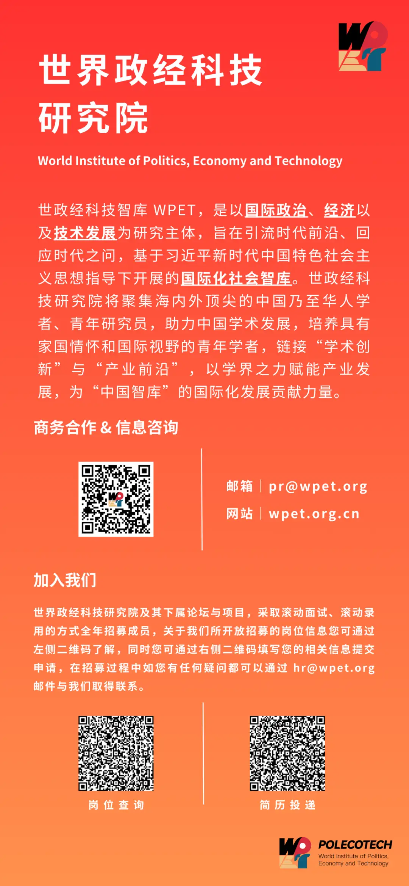